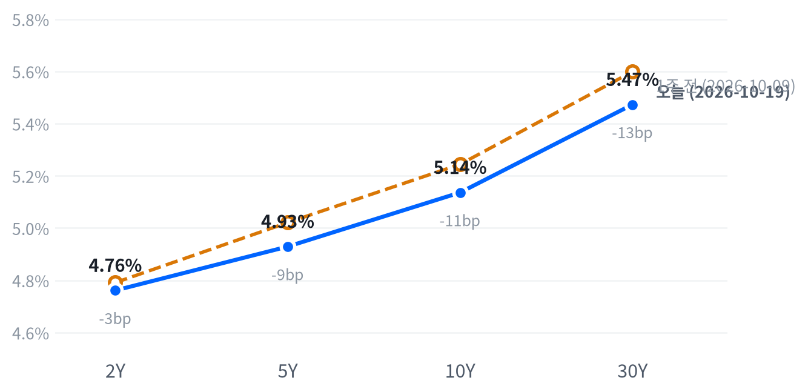

지난주 AI 하드웨어 급락 뒤 첫 세션에 반도체·메모리와 아마존이 나스닥을 끌어올렸다. 그러나 평균적인 종목은 지수를 따라가지 못했고, 국채금리가 오르자 유틸리티·부동산·금융이 밀려 S&P500은 저점권에서 끝났다.
이번 반등은 AI 업체의 차입 신용 지표가 거의 나아지지 않은 채 나와, 신용 우려가 풀린 신호로 보지 않는다. 10월 21일 장 마감 뒤 나오는 메타 3분기 실적의 설비투자 전망이 AI 인프라 관련주 판단의 다음 확인 자료다.
지난주 AI 하드웨어 급락 뒤 첫 세션은 낙폭이 컸던 종목의 반등이 이끌었다. 필라델피아 반도체지수가 8거래일 연속 하락을 끝냈고, Morgan Stanley가 아마존을 최선호주로 꼽자 아마존이 4.98% 올라 지수 기여 1위가 됐다. 반대로 국채금리가 되오르면서 유틸리티·부동산·금융 같은 금리 민감 업종은 내렸다.
이 반등을 AI 차입 신용 우려가 풀린 결과로 보지 않는다. 같은 날 CoreWeave 주가는 소폭 내려 마감했고, 이 회사의 2032년 만기 회사채 수익률은 14.9%로 지난주 고점 부근에 머물렀다는 보도가 나왔다. 신용이 그대로인데 공급망 주식이 오른 것은 네오클라우드의 차입 문제와 하이퍼스케일러의 설비투자 수요가 따로 움직일 수 있다는 정황으로 본다. 가장 강한 반론은 Gartner의 경고다. Gartner는 AI 수익이 아직 네오클라우드 구축을 정당화할 만큼 크지 않다고 봤다. 그렇다면 수익성 의문이 공급망 전체로 번져, 설비투자가 늘어도 주가가 오르지 못한다. 메타의 2026년 설비투자 가이던스는 1,300~1,450억 달러지만 2027년 전망에 대한 컨센서스는 확인하지 못해, 시장이 무엇을 기대하는지는 아직 잴 수 없다.
반도체·AI 인프라 관련주에 대한 판단은 10월 21일 메타 실적까지 보류한다. 하루 반등이 신용 지표 개선 없이 증권사 의견과 저가 매수로 나왔기 때문이다. AI 인프라 안에서도 칩·광학(마벨 +4.06%)은 오르고 전력·냉각(GE 버노바 -1.39%)은 내려, 반도체 업종과 전력망 투자 테마의 흐름이 이날 엇갈렸다. 메타가 설비투자 전망을 지켰는데도 공급망이 시장을 뚜렷이 이기지 못하면, 3개월 시계에서 반도체·전력망 테마를 받치던 하이퍼스케일러 수요라는 전제가 약해진다.
메타가 10월 21일 장 마감 뒤 2026년 설비투자 범위를 유지하거나 올리는 경우를 본다. 하단은 1,300억 달러, 상단은 1,450억 달러 이상이어야 하고, 2027년 전망을 내면 2026년보다 많아야 한다. 이 조건에서 10월 22일 종가 기준 AI 인프라 다섯 종목(마벨·코히런트·루멘텀·GE 버노바·버티브) 단순평균 등락률에서 S&P 등락률을 뺀 값이 +2.31%p 이상이면 이 판단이 지지된다. -2.31%p 이하면 약해지고 설비투자 수익성 의문을 우선 설명으로 본다. 그 사이이거나, 메타가 범위를 낮추거나, 10월 22일 2년물 종가가 전일 대비 5bp 이상 움직이거나, 다섯 종목의 실적·고유 뉴스나 CoreWeave·Oracle의 신용 사건이 겹치면 결론을 내지 않는다. 다음 분기점은 10월 21일 메타 실적, 22일 웨스턴디지털 실적, 28일 FOMC다.
출처: Bloomberg, CNBC
| 지수 | 종가 | 등락률 | 기준일 |
|---|---|---|---|
| 닛케이225 | 65,324.29 | +1.39% | 10월 16일 |
| 항셍 | 24,186.83 | +0.52% | 10월 16일 |
| 상해종합 | 3,716.28 | +0.24% | 10월 16일 |
| DAX | 25,622.61 | +0.95% | 10월 16일 |
| FTSE100 | 10,764.69 | -1.08% | 10월 19일 |
| 유로스톡스50 | 6,204.23 | +0.58% | 10월 16일 |
| VIX | 18.44 | -7.75% | 10월 19일 |
아시아 세 지수와 DAX·유로스톡스50은 들어온 마지막 종가인 10월 16일 값이고, FTSE100만 10월 19일 값이다.
아시아는 미국 반등과 방향이 같았다. 10월 16일 닛케이가 1.39% 오르는 등 세 지수가 평균 0.72% 올랐다. 유럽도 평균으로는 올랐지만 DAX(+0.95%)와 달리 FTSE100은 19일 1.08% 내려 지역 안에서도 갈렸다.
야간 선물은 일요일 저녁 개장 때가 저점이었다. S&P 선물(ES)은 18:00(ET) 7,719에서 23:30 7,769까지 올랐고, 나스닥 선물(NQ)은 02:00 29,814가 고점이었다. 현물은 S&P +0.57%, 나스닥 +1.03%, 러셀2000 +0.28%의 갭으로 상승 출발했다.
평균적인 종목은 지수를 따라가지 못했다. 동일가중 S&P에서 시총가중 지수를 뺀 수익률 차이가 -0.75%p로, 참여도는 소수가 끌어올림 쪽이었다. S&P와 러셀2000은 저점권에서, 나스닥은 하루 범위의 중간에서 끝났다.
저점권·고점권 경계는 최근 2,253거래일의 일간 종가 위치 이력으로 다시 잰 기준이다.
반도체·메모리 반등과 아마존이 지수를 올렸고, 국채금리 반등이 금리 민감 업종을 눌렀다. 10년물 금리 상승은 지난주 AI·반도체 매도 때 들어온 안전자산 매수가 되돌려진 결과라는 마감 정리가 나왔다. S&P는 11:30(ET) 7,731까지 올랐다가 오후 내내 밀려 시가 아래에서 끝났지만, 오후 하락을 직접 설명하는 뉴스는 찾지 못했다. 장 마감 뒤 시간외 거래를 움직인 발표는 확인되지 않았다.
출처: CappNotes
| 지수 | 종가 | 등락률 |
|---|---|---|
| 나스닥 | 26,430.89 | +1.11% |
| S&P500 성장주 | 140.21 | +0.92% |
| S&P500 | 7,690.73 | +0.41% |
| 러셀2000 | 2,728.30 | +0.25% |
| 다우존스 | 51,966.03 | -0.07% |
| S&P500 가치주 | 235.16 | -0.13% |
| 섹터 | 등락률 |
|---|---|
| 경기소비재 | +1.78% |
| 기술 | +1.36% |
| 소재 | +0.06% |
| 커뮤니케이션서비스 | -0.21% |
| 필수소비재 | -0.47% |
| 헬스케어 | -0.60% |
| 산업재 | -0.64% |
| 에너지 | -0.64% |
| 금융 | -0.83% |
| 부동산 | -1.16% |
| 유틸리티 | -2.01% |
반도체·메모리 반등과 아마존 강세에 나스닥이 1.11% 오른 26,431로 마감했다. S&P500은 0.41% 오른 7,691로 최근 2년(504거래일) 가운데 이보다 높았던 날이 31일뿐인 높은 자리를 지켰다. 다우는 0.07% 내렸고 러셀2000은 0.25% 오르는 데 그쳤다. 지난주 나스닥이 4.5% 내려 4주 연속 상승이 끊겼다는 보도에 비하면 되찾은 폭은 작다.
지수 상승은 기술과 경기소비재 두 업종이 만들었다. 추정 기여도로 보면 기술이 0.46%p, 경기소비재가 0.24%p를 보탰고, 금융과 유틸리티가 각각 0.09%p, 헬스케어가 0.06%p를 덜어냈다. 업종 합으로 설명되지 않는 부분은 +0.04%p다. 성장주가 0.92% 오르는 동안 가치주는 0.13% 내려, 반등은 지난주 많이 빠진 성장주 쪽에 몰렸다.
추정 기여도는 업종 비중을 직접 받지 않아, 최근 252거래일 지수·업종 수익률로 추정한 비중을 곱한 값이다. 소재와 부동산은 비중을 추정할 수 없어 빠졌다.
그래서 이번 반등을 추세 회복으로 보기는 이르다. 상승이 두 업종과 소수 대형주에 몰렸고, 오전 고점 뒤 상승분 대부분을 내줬다. CFRA의 샘 스토발은 매도가 끝났다고 보기 어렵고 투자자들이 가장 취약한 기업을 가려내는 중이라고 말했다.
출처: CNBC, Quartz, Reuters
| 만기 | 종가(10월 19일) | 전일比(bp) | 1주 전(10월 9일) | 주간 변화(bp) |
|---|---|---|---|---|
| 2Y | 4.761% | +2.5 | 4.791% | -3.0 |
| 5Y | 4.929% | +3.0 | 5.021% | -9.2 |
| 10Y | 5.136% | +3.8 | 5.244% | -10.8 |
| 30Y | 5.473% | +3.6 | 5.599% | -12.6 |
국채금리는 AI 하드웨어 반등과 함께 지난주 하락분 일부를 되돌렸다. 10년물은 3.8bp 오른 5.136%로 최근 2년(504거래일) 가운데 이보다 높았던 날이 15일뿐인 고점권에 있고, 30년물은 3.6bp 오른 5.473%였다. 2년물은 2.5bp 올라 상승 폭이 가장 작았다.

네이버 국채 종가, 전 만기 10월 19일 기준. 10월 12일 국채시장 휴장으로 1주 전 기준일은 10월 9일이다. 1주 전과 비교하면 30년물이 가장 크게 내리고 2년물은 조금 내려, 장기물이 이끈 불 플래트닝이다.
하루로 보면 장기물이 조금 더 올라 커브가 소폭 가팔라진 베어 스티프닝이다. 2s10s는 37.5bp, 5s30s는 54.4bp다. 한 주 단위로는 장기물 하락 폭이 훨씬 커 지난주 안전자산 매수는 일부만 되돌려졌다.
명목금리를 실질금리와 기대인플레로 나눈 최신 자료는 10월 16일 기준이라 이날 상승의 내역은 아직 없다. 16일 10년물 1bp 하락은 실질금리 4bp 하락과 기대인플레 3bp 상승이 상쇄된 결과였고, 5거래일 13bp 하락은 전부 실질금리 몫이었다. 19일 10년 기대인플레는 2.35%로 하루 동안 변하지 않아, 이날 상승도 실질금리 쪽에서 나왔을 여지가 크다. 지난주 안전자산 매수가 되돌려졌다는 마감 정리와 방향이 같다.
신용시장은 지난주 후반까지 넓어졌다. 하이일드 스프레드는 10월 16일 3.31%로 하루 8bp, 5거래일 사이 20bp 넓어졌고, 투자등급 스프레드는 0.85%로 거의 그대로였다. 월요일 주식 반등이 신용으로 번졌는지는 19일 스프레드가 나와야 확인된다.
5년 뒤 5년 명목금리 5.29%, 실질 2.96%(10월 16일 기준). 기대인플레 쪽 수치와의 교차검증은 할 수 없었고, 위험 프리미엄이 섞인 값이다.
출처: CappNotes
| 통화쌍 | 종가 | 등락률 | 기준일 |
|---|---|---|---|
| DXY | 101.995 | +0.20% | 10월 19일 |
| USD/KRW | 1,332.02 | -0.20% | 10월 19일 |
| USD/JPY | 158.545 | +0.35% | 10월 19일 |
| EUR/USD | 1.1215 | -0.24% | 10월 19일 |
달러는 유로 약세에 조금 올랐다. 달러지수는 0.20% 오른 101.995, 유로/달러는 0.24% 내린 1.1215였고, 엔/달러는 0.35% 오른 158.545엔으로 장 막판 그날 고점 부근에서 끝났다. 원/달러는 반대로 내려 1,332원이 됐고, 이는 비교 기간을 통틀어 가장 낮은 자리다.
달러를 올린 것은 금리차보다 유로 쪽 재료라고 본다. 프랑스의 폭력 시위와 화요일 예산안 1부 표결을 앞둔 정치 불안으로 주변국 국채 스프레드가 벌어지며 유로가 한때 1.1185달러까지 밀렸다는 분석이 나왔다. ING는 프랑스 10년물의 독일 대비 스프레드가 월요일 147bp로 끝나 국가부채 위기 이후 가장 넓었다고 봤다. 미국 2년물은 2.5bp 오르는 데 그쳐 금리차로 설명할 몫은 작다. 엔화는 다카이치 총리가 엔저·고금리 책임을 부인한 날 약했고, 원화가 달러 강세와 반대로 간 이유는 확인되지 않았다.
원/달러의 위치는 최근 2년(504거래일) 종가 기준이다. 환율은 뉴욕 16:00 ET 가격, 전 거래일 같은 시각 대비다.
출처: Investing.com, CNBC
| 품목 | 종가 | 등락률 |
|---|---|---|
| WTI | $98.36 | -0.58% |
| Brent | $109.35 | -0.17% |
| 천연가스 | $3.044 | -2.47% |
| 금 | $4,161.50 | -0.68% |
유가는 러시아 제재 완화와 중동 공급 불안이 맞서 보합권에서 끝났다. WTI는 0.58% 내린 98.36달러로 이보다 높았던 날이 29일뿐인 높은 수준을 지켰고, 평소 하루 움직임에 비하면 거의 멈춰 있었다. 브렌트는 0.17% 내린 109.35달러였고, 천연가스는 2.47% 내려 원자재 가운데 가장 크게 움직였다. 금은 0.68% 내린 4,162달러다.
하락 쪽 재료는 트럼프 대통령이 러시아 에너지 수출 일부에 대한 제재·관세 면제에 서명했다는 소식이었다. 상승 쪽 재료는 후티의 사우디 에너지 시설 공격 주장과 호르무즈 해협 통과 물량 감소였고, 후티의 주장은 독립적으로 확인되지 않았다. Kpler는 걸프 원유 흐름이 최근 한 주 하루 약 850만 배럴로, 그 전주 2,000만 배럴 이상에서 크게 줄었다고 집계했다. WTI는 13:30(ET) 99.71달러까지 올랐다가 상승분을 내줬다. 표의 WTI는 12월물이라, 화요일 만기인 11월물이 올랐다는 기사 속 등락률과 다르다.
브렌트가 WTI보다 덜 내려 두 유종의 가격 차는 10.99달러로 전일(10.61달러)보다 조금 벌어졌다. 금은 10년물 금리가 오르고 달러가 강해진 날 새벽 고점에서 오후까지 꾸준히 밀렸다.
WTI의 위치는 최근 2년(504거래일) 종가 기준이다. 원자재·환율은 뉴욕 16:00 ET 가격, 전 거래일 같은 시각 대비다. 결제가와 다를 수 있다.
출처: Rigzone, BigGo
미국 경기 국면은 성장 보합·물가 교착인 교착을 10월 14일부터 4영업일째 유지한다. 이날은 새 경제지표 발표가 없어 국면이 움직일 수 없다. 성장 점수 0.043과 물가 점수 0.017은 둘 다 어느 쪽으로도 기울 만큼은 아니다. 지난주 물가 지표는 전월비 석 달 평균의 재가속과 전년비의 둔화가 맞섰고, 성장 좌표는 11월 6일 10월 고용이 다시 점검한다.
| 지표 | Actual | Forecast | Previous | 발표일 | 컨센 대비 | 직전 대비 | 추세 |
|---|---|---|---|---|---|---|---|
| 구인건수(8월) | 7,079K | — | 7,335K | 2026-08 기준월 | 악화 | 악화(미미) · 3개월 평균 7,336K → 7,199K | |
| 신규 실업수당 청구 | 199,000 | — | 198,000 | 2026-10-15 (10월 10일 주간) | 악화 | 개선(완만) · 4주 평균 204K → 198K | |
| 신규 청구 4주 평균 | 198,500 | — | 198,250 | 2026-10-15 (10월 10일 주간) | 악화 | 개선(완만) · 4주 평균 206K → 200K | |
| 계속 실업수당 청구 | 1,710,000 | — | 1,714,000 | 2026-10-15 (10월 3일 주간) | 개선 | 개선(뚜렷) · 4주 평균 1,757K → 1,709K | |
| 비농업 고용 변화(9월) | +29K | — | +133K | 2026-09 기준월 | 악화 | 악화(미미) · 3개월 평균 +81K → +51K | |
| 실업률(9월) | 4.2% | — | 4.1% | 2026-09 기준월 | 악화 | 개선(미미) · 3개월 평균 4.27% → 4.13% | |
| 평균시간당임금 MoM(9월) | +0.13% | — | +0.32% | 2026-09 기준월 | 악화 | 악화(미미) · 3개월 평균 +0.21% → +0.19% |
| 지표 | Actual | Forecast | Previous | 발표일 | 컨센 대비 | 직전 대비 | 추세 |
|---|---|---|---|---|---|---|---|
| 산업생산 MoM(9월) | +0.66% | — | +0.06% | 2026-10-16 | 개선 | 보합 · 3개월 평균 +0.40% → +0.32% | |
| 내구재주문 MoM(8월) | -0.07% | — | +0.87% | 2026-08 기준월 | 악화 | 악화(완만) · 3개월 평균 +1.95% → +0.46% | |
| 신규주택판매(8월) | 684K | — | 643K | 2026-08 기준월 | 개선 | 개선(미미) · 3개월 평균 645K → 666K | |
| 기존주택판매(9월) | 399만 | — | 393만 | 2026-10-13 | 개선 | 악화(뚜렷) · 3개월 평균 4,120K → 3,993K | |
| 실질GDP QoQ 연율(2분기) | +2.2% | — | +2.5% | 2026년 2분기 기준 | 악화 | — | |
| 필라델피아 연은 제조업(10월, 보도 기준) | +20.9 | +28.4 | +37.8 | 2026-10-15 | 하회▼ | — | — |
| 지표 | Actual | Forecast | Previous | 발표일 | 컨센 대비 | 직전 대비 | 추세 |
|---|---|---|---|---|---|---|---|
| 소매판매 MoM(9월) | +0.77% | 0.4% | +1.29% | 2026-10-15 | 상회▲ | 악화 | 보합 · 3개월 평균 +0.61% → +0.55% |
| 미시간대 소비자심리(8월) | 51.7 | — | 55.2 | 2026-08 기준월 | 악화 | 개선(미미) · 3개월 평균 49.3 → 52.1 |
| 지표 | Actual | Forecast | Previous | 발표일 | 컨센 대비 | 직전 대비 | 추세 |
|---|---|---|---|---|---|---|---|
| CPI YoY(9월) | 3.72% | — | 3.35% | 2026-10-14 | 상승 | 둔화(미미) · 3개월 평균 3.80% → 3.46% | |
| CPI MoM(9월) | +0.65% | — | +0.40% | 2026-10-14 | 상승 | 재가속(완만) · 3개월 평균 +0.23% → +0.37% | |
| Core CPI YoY(9월) | 2.57% | — | 2.45% | 2026-10-14 | 상승 | 둔화(미미) · 3개월 평균 2.71% → 2.49% | |
| Core CPI MoM(9월) | +0.33% | 0.2% | +0.29% | 2026-10-14 | 상회▲ | 상승 | 재가속(완만) · 3개월 평균 +0.19% → +0.28% |
| PPI 최종수요 MoM(9월) | +1.34% | 0.6% | +0.47% | 2026-10-15 | 상회▲ | 상승 | 재가속(완만) · 3개월 평균 +0.49% → +0.66% |
| PCE 물가 YoY(8월) | 3.42% | — | 3.36% | 2026-08 기준월 | 상승 | 둔화(미미) · 3개월 평균 3.59% → 3.41% | |
| Core PCE YoY(8월) | 3.01% | — | 2.98% | 2026-08 기준월 | 상승 | 둔화(미미) · 3개월 평균 3.12% → 3.01% | |
| 미시간대 1년 기대인플레(8월) | 4.0% | — | 4.2% | 2026-08 기준월 | 하락 | 교착 · 3개월 평균 4.43% → 4.27% |
직전 대비는 Actual을 Previous와 비교한 것이고, 추세는 최근 3개월 평균을 그 앞 3개월 평균과 비교한 것입니다(주간 실업수당 청구는 4주 평균끼리). 추세의 세기는 그 지표가 평소 움직이는 폭에 견준 크기이고, 작은 변화는 보합으로 봅니다. 분기 지표인 GDP는 두 비교가 같은 숫자를 보므로 직전 대비만 싣습니다.
연준의 다음 금리 변경은 12월 9일 FOMC의 25bp 추가 인상이라는 판단을 유지한다. CME FedWatch 기준 10월 27~28일 FOMC 인상 확률은 주말 사이 약 15.5%로 보도됐고, 12월 회의까지 인상할 확률은 약 89~90%다. 16일 14.9%에서 거의 움직이지 않아 시점을 바꿀 이유가 없다.
10월 27일 FOMC 회의 전까지 CME FedWatch 10월 인상 확률이 장 마감 무렵 기준으로 과반에 올라서면 시점을 10월로 당긴다. 11월 6일 10월 고용에서 실업률이 3월 이후 범위(4.1~4.3%) 위로 올라서면 인상 우위 판단을 철회한다.
자산별 전달경로는 전일과 같다. 새 발표가 없는 날이라 방향을 바꿀 근거가 들어오지 않았다.
출처: FXStreet
| 지수 | 순위(5거래일 전) | 1개월 | 3개월 | SPY 대비 3개월 | 대비 변화 | 12-1 모멘텀 | 변동성 | 1일 VaR 95% | 베타 | 50/200일선 | 52주 고점 대비 |
|---|---|---|---|---|---|---|---|---|---|---|---|
| 에너지 XLE | 1(2) | +6.0% | +16.6% | +13.9%p | +1.1%p | +54.2% | 22.0% | 2.1% | -0.66 | 위/위 | -0.6% |
| 소프트웨어 IGV | 2(1) | +1.6% | +15.4% | +12.8%p | -2.4%p | -7.5% | 34.3% | 2.6% | 1.77 | 위/위 | -9.5% |
| 초대형주 Top 50 XLG | 6(4) | +0.7% | +3.6% | +0.9%p | -0.5%p | +11.0% | 13.4% | 0.9% | 1.19 | 위/위 | -2.4% |
| 경기소비재 XLY | 9(17) | +3.3% | -0.1% | -2.8%p | +3.9%p | -3.9% | 17.0% | 1.5% | 0.99 | 위/아래 | -7.5% |
| 금속·광업 XME | 10(10) | -6.7% | -0.2% | -2.9%p | +0.4%p | +2.2% | 35.7% | 3.7% | 1.99 | 아래/아래 | -23.6% |
| 금융 XLF | 11(13) | -1.1% | -1.5% | -4.2%p | +1.2%p | +9.2% | 12.6% | 1.4% | 0.58 | 아래/위 | -5.6% |
| 모멘텀 팩터 MTUM | 15(11) | -4.5% | -5.8% | -8.5%p | -3.5%p | +23.3% | 25.4% | 2.8% | 1.55 | 아래/위 | -14.2% |
| 반도체·AI 하드웨어 SMH | 17(12) | -4.3% | -6.1% | -8.8%p | -3.5%p | +67.4% | 36.9% | 4.0% | 2.33 | 아래/위 | -18.0% |
| 전력망 GRID | 18(15) | -5.1% | -6.1% | -8.8%p | -2.5%p | +15.7% | 25.2% | 2.7% | 1.61 | 아래/아래 | -15.0% |
| 산업재 XLI | 19(20) | -1.5% | -6.5% | -9.1%p | +0.6%p | +12.9% | 14.8% | 1.5% | 0.93 | 아래/아래 | -10.4% |
| 소형주 IWM | 21(19) | -4.5% | -8.3% | -11.0%p | -1.8%p | +17.1% | 14.1% | 1.6% | 1.03 | 아래/아래 | -10.8% |
| 은행 KBE | 22(22) | -4.7% | -8.7% | -11.4%p | -0.3%p | +23.1% | 14.3% | 1.4% | 0.53 | 아래/아래 | -11.4% |
| 방산 ITA | 23(24) | -2.9% | -9.5% | -12.2%p | +3.9%p | +3.9% | 19.3% | 2.2% | 0.90 | 아래/아래 | -17.9% |
| 소형 성장 IWO | 24(21) | -5.4% | -10.2% | -12.8%p | -1.8%p | +11.0% | 18.7% | 2.1% | 1.37 | 아래/아래 | -13.4% |
| 주택건설 XHB | 25(25) | -1.8% | -10.7% | -13.3%p | +3.0%p | -9.4% | 25.1% | 2.4% | 1.38 | 아래/아래 | -21.6% |
| 지수 | 순위(5거래일 전) | 1개월 | 3개월 | SPY 대비 3개월 | 대비 변화 | 12-1 모멘텀 | 변동성 | 1일 VaR 95% | 베타 | 50/200일선 | 52주 고점 대비 |
|---|---|---|---|---|---|---|---|---|---|---|---|
| 헬스케어 XLV | 3(3) | +4.7% | +10.0% | +7.3%p | +2.0%p | +19.8% | 17.2% | 1.4% | 0.07 | 위/위 | -0.9% |
| 배당 SCHD | 4(5) | +2.5% | +5.2% | +2.5%p | +2.1%p | +30.2% | 10.7% | 1.0% | 0.14 | 위/위 | -2.0% |
| 필수소비재 XLP | 5(8) | +6.0% | +4.4% | +1.7%p | +3.6%p | +7.4% | 14.9% | 1.4% | -0.16 | 위/위 | -1.2% |
| 퀄리티 팩터 QUAL | 7(6) | +2.8% | +3.5% | +0.8%p | +0.5%p | +15.0% | 9.3% | 0.8% | 0.78 | 위/위 | -1.1% |
| 저변동성 SPLV | 13(18) | +1.6% | -2.5% | -5.2%p | +2.1%p | +2.8% | 9.3% | 1.0% | 0.04 | 위/위 | -5.3% |
| 유틸리티 XLU | 20(23) | +1.4% | -7.2% | -9.9%p | +2.0%p | -8.7% | 15.1% | 1.4% | 0.21 | 아래/아래 | -11.5% |
| 지수 | 순위(5거래일 전) | 1개월 | 3개월 | SPY 대비 3개월 | 대비 변화 | 12-1 모멘텀 | 변동성 | 1일 VaR 95% | 베타 | 50/200일선 | 52주 고점 대비 |
|---|---|---|---|---|---|---|---|---|---|---|---|
| 일본 EWJ | 8(7) | -2.1% | +2.4% | -0.3%p | -0.2%p | +24.1% | 18.6% | 1.5% | 1.17 | 아래/위 | -4.4% |
| 유럽 VGK | 12(16) | -2.0% | -2.4% | -5.1%p | +1.2%p | +12.5% | 12.0% | 1.2% | 0.69 | 아래/아래 | -7.0% |
| 신흥국 EEM | 14(9) | -5.5% | -3.1% | -5.8%p | -2.8%p | +26.1% | 22.1% | 2.1% | 1.46 | 아래/아래 | -11.1% |
| 중국 MCHI | 16(14) | -4.2% | -5.8% | -8.5%p | -2.7%p | -14.7% | 15.5% | 1.7% | 0.49 | 아래/아래 | -21.0% |
| 지수 | 순위(5거래일 전) | 1개월 | 3개월 | SPY 대비 3개월 | 대비 변화 | 12-1 모멘텀 | 변동성 | 1일 VaR 95% | 베타 | 50/200일선 | 52주 고점 대비 |
|---|---|---|---|---|---|---|---|---|---|---|---|
| S&P 500 SPY | – | +0.6% | +2.7% | 0.0%p | – | +16.5% | 10.9% | 0.8% | 1.00 | 아래/위 | -1.6% |
| S&P 500 동일가중 RSP | – | +0.9% | +0.7% | -2.0%p | – | +14.9% | 10.1% | 0.9% | 0.64 | 아래/위 | -3.9% |
| 나스닥 100 QQQ | – | -0.3% | +1.4% | -1.3%p | – | +20.7% | 18.3% | 1.7% | 1.53 | 아래/위 | -5.4% |
가격 기준 시장 국면은 강세이고, 7월 31일 횡보에서 넘어온 뒤 56거래일째다. 그러나 SPY가 766.48로 50일선(767.30) 아래에 머물러, 그날 조건만 보면 2거래일째 횡보였다. 하루 더 이어지면 국면이 횡보로 바뀐다. 52주 고점과의 거리는 1.62%라 단기 약세 조건과는 아직 멀다.
이날 반등에도 반도체·AI 하드웨어의 3개월 상대수익률은 한 주 전보다 나빠졌다. 순위가 12위에서 17위로 밀렸고, SPY 대비 3개월 상대수익률은 3.48%p 악화된 -8.79%p다. 지난주 급락이 5거래일 비교 구간에 그대로 남아 있어서다. 전력망도 15위에서 18위로 내려가 상대수익률이 2.51%p 줄어든 -8.8%p가 됐다. 반대로 경기소비재는 17위에서 9위로 올라 상대수익률이 3.85%p 개선된 -2.82%p였고, 아마존 급등이 그 흐름을 받쳤다.
위험 지표는 엇갈렸다. VIX는 18.4로 내려 위험선호가 돌아온 쪽을 가리키지만, 하이일드 스프레드는 10월 16일까지 5거래일 사이 넓어져 신용 부담은 아직 남아 있다. 순유동성은 4주 사이 늘었고 금융여건지수는 조금 조여졌지만 평균보다 느슨해, 유동성 방향은 중립이다.
아마존(+4.98%)은 경기소비재 업종의 상대 강세를 이끈 종목이다. Morgan Stanley가 아마존을 최선호주로 지정하고 목표가를 335달러에서 350달러로 올렸다.
엔비디아(+1.38%)는 반도체·AI 하드웨어 관련주의 반등을 받친 종목이다. 필라델피아 반도체지수가 연속 하락을 끝낸 날 지수 기여 상위에 들었지만, 회사 고유의 재료는 확인되지 않았다.
JP모건(-1.82%)은 지수 기여 하위로 금융 업종 약세를 이끌었다. 금리 상승이 유틸리티·부동산·은행을 눌렀다는 마감 정리가 나왔지만, 장기금리 상승은 보통 은행의 이자 마진에 유리해 이 설명은 약하다. 회사 고유의 재료는 확인되지 않았다.
일라이 릴리(-1.33%)는 지수 기여 하위로 헬스케어 업종 하락에 보탰다. 회사 고유의 재료는 확인되지 않았다.
샌디스크(+5.53%)와 웨스턴디지털(+6.09%)은 저장장치 쪽에서 반도체보다 크게 반등했다. BofA가 메모리주 밸류에이션이 바닥을 쳤고 최근 하락이 펀더멘털에 비해 과도하다고 봤다는 보도가 나왔다. 두 종목 모두 회사 고유의 재료는 확인되지 않았고, 웨스턴디지털은 10월 22일 장 마감 뒤 실적을 낸다.
최근 AI 인프라 관련주의 부진은 대부분 반도체 업종 공통 요인으로 설명된다. 최근 20거래일 이 묶음의 초과수익은 -13.23%였다. 이 가운데 반도체 축이 -11.21%p를 설명하고, 대형−소형 축(-2.89%p)과 성장−가치 축(-1.93%p)이 나머지 대부분을 보탠다. 세 축(성장−가치·대형−소형·반도체)으로 설명되지 않는 몫은 +2.80%p로, 업종 공통 요인 밖에서 따로 할인된 부분은 없다.
초과수익은 하루치 초과수익의 20거래일 합이다. 시장 민감도는 3.34다.
출처: CNBC, CappNotes, TradingKey
지난주 AI 인프라 약세를 약한 차입자의 신용 문제로 보고 하이퍼스케일러 수요는 온전하다고 본 판단(10월 19일)은 출발점이 이날 AI 인프라 다섯 종목 단순평균 등락률에서 S&P 등락률을 뺀 +0.27%p다. 메타가 10월 21일 장 마감 뒤 2026년 설비투자 범위를 유지하거나 올리는 경우를 본다. 하단은 1,300억 달러, 상단은 1,450억 달러 이상이어야 하고, 2027년 전망을 내면 2026년보다 많아야 한다. 이 조건에서 10월 22일 종가 기준 AI 인프라 다섯 종목(마벨·코히런트·루멘텀·GE 버노바·버티브) 단순평균 등락률에서 S&P 등락률을 뺀 값이 +2.31%p 이상이면 이 판단이 지지된다. -2.31%p 이하면 약해지고 설비투자 수익성 의문을 우선 설명으로 본다. 그 사이이거나, 메타가 범위를 낮추거나, 10월 22일 2년물 종가가 전일 대비 5bp 이상 움직이거나, 다섯 종목의 실적·고유 뉴스나 CoreWeave·Oracle의 신용 사건이 겹치면 결론을 내지 않는다.
HDD 2종의 추가 낙폭을 포지션 축소의 고베타 효과로 본 판단(10월 16일)은 실적 전이라 결론을 내지 않는다. 이날 웨스턴디지털이 마이크론보다 3.12%p 더 올라, 10월 12일 종가 대비 누적으로는 웨스턴디지털 -8.98%, 마이크론 -8.51%까지 차이가 줄었다. 판단의 출발점이던 3.06%p 할인 대부분이 실적 전에 되돌려졌다. 확인 기준은 바꾸지 않는다. 웨스턴디지털 10월 22일 발표에서 다음 분기 매출 가이던스 중간값이 이번 분기 실제 매출 이상이고 완판·장기 계약 설명이 유지될 때, 23일 종가 기준 웨스턴디지털 1일 수익률에서 마이크론 1일 수익률을 뺀 값이 +3.06%p 이상이면 지지되고 0%p 이하면 약해진다. 결과를 읽을 때는 남은 할인이 작다는 점을 함께 본다.
AI 인프라 급락을 신용·수익성 쪽 매도로 본 판단(10월 14일)은 이날 비교에 들지 않았다. 2년물 상승 폭(2.5bp)이 기준에 못 미쳤기 때문이다. 기준은 그대로다. 10월 27일 종가까지 2년물 종가가 전일 대비 5bp 이상 오른 세션마다 AI 인프라 다섯 종목 단순평균 등락률에서 S&P 등락률을 뺀 값을 재고, 그 평균이 -2.0%p보다 덜 나쁘면 이 판단이 지지되고 그 이하면 약해진다.
AI 자본지출 랠리가 연준 인상 사이클과 따로 간다는 판단(9월 22일)은 이날도 결론을 내지 않는다. 금리 민감 업종이 내리고 AI 관련주가 오른 원래의 모습이 다시 나왔지만, 확인 조건인 실질금리 상승은 19일 값이 아직 없어 확인할 수 없다. 지난번 메커니즘 약화 판단은 그대로 두고, 기한은 10월 28일 FOMC다.
통신 3사 급락을 장기 가격결정력의 재평가로 본 판단(10월 9일)은 유지한다. 통신 3사의 새 종가 자료가 없어 10월 26일 07:00(ET) 베라이즌 3분기 실적일 종가에서 확인한다.
이 보고서의 시세는 Yahoo Finance와 네이버 국채 종가, 경제지표는 FRED와 각 발표 기관(BLS·BEA·Census 등), 그 밖의 내용은 본문에 밝힌 출처에서 가져왔다. 이 보고서는 투자 자문이 아니며 특정 자산의 매수·매도를 권유하지 않는다. 투자 판단과 그 결과에 대한 책임은 전적으로 투자자 본인에게 있다.